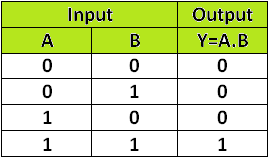
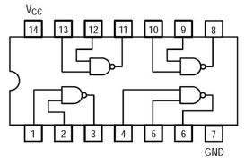
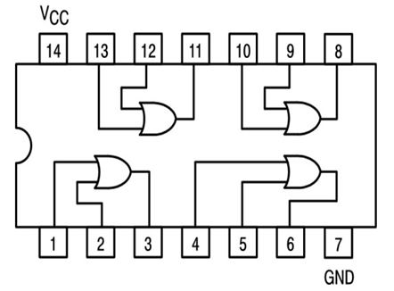
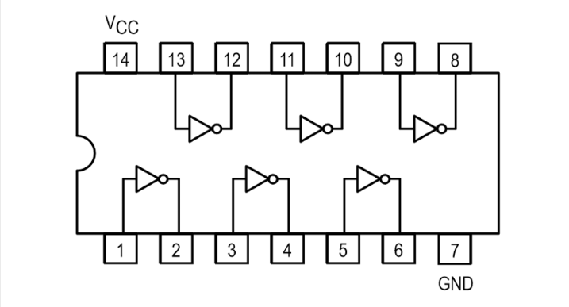
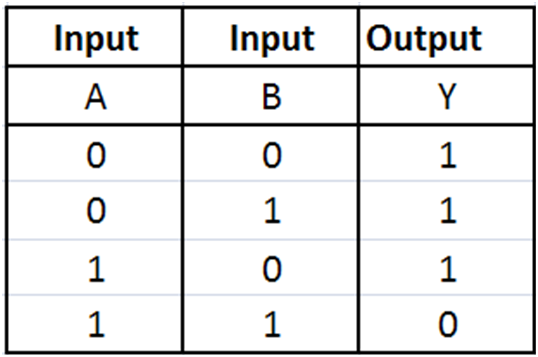
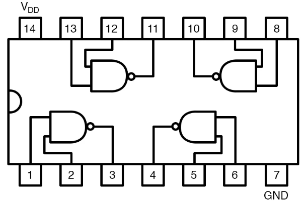
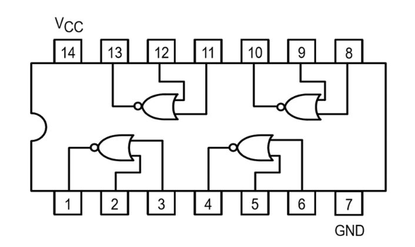
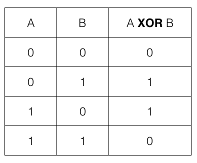
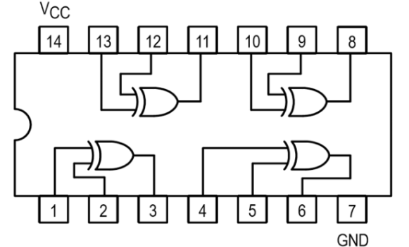
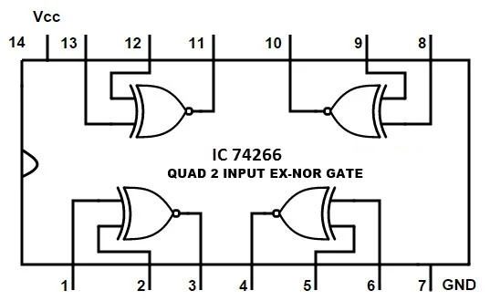

BASIC GATES
INTRODUCTION
Logic gates are the basic building blocks of any digital system. Logic gates are electronic circuits having one or more than one input and only one output. The relationship between the input and the output is based on a certain logic. Based on this, logic gates are named as
1) AND gate
2) OR gate
3) NOT gate
4) NAND gate
5) NOR gate
6) Ex-OR gate
7) Ex-NOR gate
1) AND GATE
The AND gate is an electronic circuit that gives a high output (1) only if all its inputs are high. A dot (.) is used to show the AND operation i.e. A.B or can be written as AB

Figure-1:Logic Symbol of AND Gate

Figure-2:Truth Table of AND Gate
A simple 2-input logic AND gate can be constructed using IC 7408

Figure-3:IC 7408
2) OR GATE
The OR gate is an electronic circuit that gives a high output (1) if one or more of its inputs are high. A plus (+) is used to show the OR operation.
Y= A+B

Figure-4:Logic Symbol of OR Gate

Figure-5:Truth Table of OR Gate
A simple 2-input logic OR gate can be constructed using IC 7432

Figure-6:IC 7432
3) NOT GATE
The NOT gate is an electronic circuit that produces an inverted version of the input at its output. It is also known as an inverter. If the input variable is A, the inverted output is known as NOT A. This is also shown as A' or A with a bar over the top, as shown at the outputs.
Y=A'

Figure-7:Logic Symbol of NOT Gate

Figure-8:Truth Table of NOT Gate
A simple 1-input logic NOT gate can be constructed using IC 7404

Figure-9:IC 7404
4) NAND GATE
This is a NOT-AND gate which is equal to an AND gate followed by a NOT gate. The outputs of all NAND gates are high if any of the inputs are low. The symbol is an AND gate with a small circle on the output. The small circle represents inversion.
Y= AB

Figure-10:Logic Symbol of NAND Gate

Figure-11:Truth Table of NAND Gate
A simple 2-input logic NAND gate can be constructed using IC 7400

Figure-12:IC 7400
5) NOR GATE
This is a NOT-OR gate which is equal to an OR gate followed by a NOT gate. The outputs of all NOR gates are low if any of the inputs are high. The symbol is an OR gate with a small circle on the output. The small circle represents inversion.
Y=A+B

Figure-13:Logic Symbol of NOR gate

Figure-14:Truth Table of NOR gate
A simple 2-input logic NOR gate can be constructed using IC 7402

Figure-15:IC 7402
6) Ex-OR GATE
The 'Exclusive-OR' gate is a circuit which will give a high output if either, but not both of its two inputs are high. An encircled plus sign (⊕) is used to show the Ex-OR operation.
Y= A⊕B

Figure-16:Logic Symbol of Ex-OR gate

Figure-17:Truth Table of Ex-OR gate
Ex-OR gate is created from AND, NAND and OR gates.The output is high only when both the inputs are different.

Figure-18:IC 7486
7) Ex-NOR GATE
The 'Exclusive-NOR' gate circuit does the opposite to the EX-OR gate. It will give a low output if either, but not both of its two inputs are high. The symbol is an EX-OR gate with a small circle on the output. The small circle represents inversion.
Y= A⊕B
Figure-19:Logic Symbol of Ex-NOR gate

Figure-20:Truth Table of Ex-NOR gate
Ex-NOR gate is created from AND, NOT and OR gates.The output is high only when both the inputs are same.
